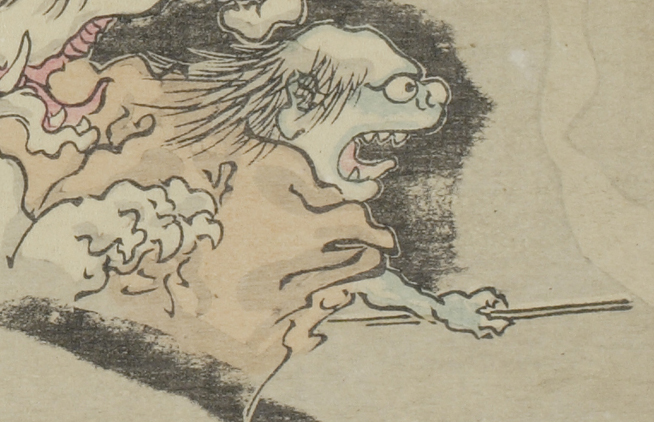

軍勢の先頭にいる化物。茶色の衣をまとい、棒を持って前に突き出している。肌の色は青く禿げ頭で、口を大きく開けている。
出典：親書誌：U426_nichibunken_0093：暁斎百鬼画談；ギョウサイヒャッキガダン／日付：2006／資源識別子：U426_nichibunken_0093_0002_0001
Copyright (c)2010- International Research Center for Japanese Studies, Kyoto, Japan. All rights reserved.